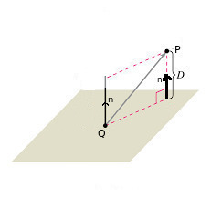
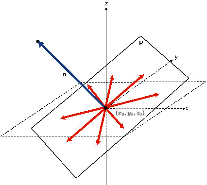

Ders 4
Düzlemin formülüne bakalım.
$$ ax + by + cz = d $$
Bu formül $x,y,z$ noktalarının bir düzlem üzerinde olma şartını tarif ediyor.
Şu problemlere bir göz atalım. Diyelim ki
1) Orijinden, yani $(0,0,0)$ noktasından geçen ve normal vektörü $\vec{N} = < 1,5,10 >$ olan bir düzlem yaratmak istiyoruz. Yani alttaki gibi bir şekil:

Herhangi bir nokta $P = (x,y,z)$ ne zaman bu düzlem üzerindedir? Eğer orijinden $P$'ye giden vektör -$\vec{OP}$ vektörü-, düzlem normali ile doksan derece açı oluşturuyorsa. Bunun nedeni, eğer $P$ noktası düzlem üzerinde ise, orijinden $P$ noktasına giden vektör düzleme paralel olacaktır. Düzlemin normal vektörünün de düzleme kesinlikle dik olduğunu bildiğimiz için, $P$ noktası düzlem üzerinde olduğu koşul için $\vec{OP} \cdot \vec{N} = 0$ ifadesini rahatlıkla yazabiliriz.
Dikkat edelim, $x,y,z$ kordinatlarını tek başlarına kullanır kullanmaz aslında $\vec{OP}$'nin orijinden başlamasını şart koşmuş oluyorum, çünkü $x,y,z$ kordinatları sadece $(0,0,0)$ noktasına referansla anlamlılar.
Her neyse, bu çarpımı normal için verdiğimiz örnek sayılar için yaparsak, sonuç $x+5y+10 = 0$ olacaktır.
2) Şimdi düzlem $P_0 = (2,1,-1)$ noktasından geçsin (orijinden değil), ve normal yine aynı olsun, $\vec{N} = < 1,5,10 >$. Bu durumu zihnimizde canlandırmak için yeni bir düzlemi hayal etmemiz lazım, ve $P$ noktası bu yeni düzlem üzerinde olacak.
$P$ ne zaman düzlem üzerinde? Bu soruyu incelemeden önce bir konuya dikkat etmeliyiz. Resimden de farkedebileceğiniz gibi, normalleri paralel olan düzlemler birbirlerine paraleldir. Bu yüzden, $P_0$ noktasından geçen diğer düzlem üzerinde çizeceğimiz bir vektör -ki resimde bu vektör $\vec{P_0P}$ vektörüdür- orijinden geçen düzlemin normaline diktir. Şimdi sorumuza tekrar dönecek olursak, eğer
$$ \vec{P_0P} \cdot \vec{N} = 0 $$
ise. O zaman
$$ < x-2, y-1, z+1 > \cdot < 1,5,10 > = 0 $$
$$ x+5y + 10z = -3 $$
$x,y,z$ üzerinde çıkartma işlemini niye yaptım? Çünkü vektörün bir ucu hala $x,y,z$ içeren $P$ noktasında, diğer ucu başlangıç noktası olan $P_0$'da.
İlk problemdeki sonuçtakiyle aradaki tek fark eşitliğin sağındaki -3 değeri. Bir benzerlik ise her iki durumda da $x,y,z$ katsayılarının normal vektörün değerlerine tekabül ediyor olması. Bu düzlemler hakkında önemli bir püf noktası, eğer orjinden geçiyorlarsa eşitliğin sağ tarafı sıfır, başka bir yerden geçiyorlarsa, başka bir değer. Peki bu -3 değerini daha hızlı bir şekilde bulamaz mıydık? Bulabilirdik. Çünkü eşitliğin sol tarafının katsayılarını hızlı bir şekilde bulabiliyoruz, orası tamam. Ayrıca düzlemdeki bir noktanın kordinatlarını da biliyoruz, bu nokta düzlemin içinden geçmesini şart koştuğumuz $P_0$ noktası. O zaman bu kordinatı $x,y,z$ terimlerini içeren formüle koyarsak, eşitliğin sağ tarafını hemen hesaplarız.
$$ x+5y + 10z = 1(2) + 5(1) + 10(-1) = 2 + 5 -10 = -3$$
Bu arada bir düzlemin tek bir formülü yoktur, sonsuz tane denklemi vardır. Mesela her şeyi 2 ile çarpsaydım
$$ 2x+10y+20z = -6 $$
olurdu, ve bu formülde aynı denklemin formülü olurdu. Bunun çokluğun sebebi normal vektörlerin herhangi bir "boyda" olabilmesi, diklik için yön yeterli olduğu için, farklı boylar ama değişmeyen yön hala aynı düzlemi tanımlıyor.
Düzlemi tanımlamak için normal vektör en önemlisi. Bir önceki derste düzlem üzerindeki noktalar, onların ortaya çıkardığı iki vektör o vektörlerin çapraz çarpımı üzerinden nasıl normal vektör hesaplanabileceğini görmüştük.
Soru:
Vektör $< 1,2,-1 >$ ve düzlem $x+y+3z = 5$ birbirine
- Paralel
- Dik
- Hiçbiri
Cevaplayin.
Vektörü ve düzlemin normal vektörünü çarptık. $< 1,2,-1 >\cdot< 1,1,3 > = 0$.
Dogru cevap: "Paralel".
Şimdi bir lineer denklem sistemini inceleyelim.
$$ x + z = 1 $$
$$ x + y = 2 $$
$$ x + 2y + 3z = 3 $$
İlk iki denkleme bakalım. Bu denklem belli, özel iki $x,z$ noktasından bahsediyor. İkinci denklemi de gözönüne alınca, aynı $x,z$ noktalarının ikinci denklem için de geçerli olması gerekir.
İlk iki denklemleri ayrı düzlemler olarak düşünürsek, çözüm olacak $x,y,z$ iki düzlemin kesiştiği yerdedir. Peki üçüncü denklem, yani üçüncü düzlem ne yapar?

O da iki düzlemin kesimindeki çizgiyi keser. Kesişimin kesimi bir noktadır. O nokta da, üstteki lineer sistemin çözümü olan noktadır.
Soru:
Eğer 3 x 3 boyutlarındaki bir lineer sistemin çözümü bir nokta değilse, nedir?
- Çözüm yoktur
- İki nokta (2 çözüm)
- Bir çizgi ($\infty$ tane çözüm)
- Bir tetrahedron
- Bir düzlem
- Bilmiyorum
Diyelim ki ilk iki düzlemin kesişmesi bir çizgi ortaya çıkardı, ama bu çizgi üçüncü düzlem ile paralel. O zaman çözüm yok demektir. Fakat şu da doğru olabilir, belki bu çizgi üçüncü denklemin "üzerindedir". Bu durum cebirsel olarak iki denklemin ortaya çıkardığı bir denklemin üçüncü denklemin katı olmasıdır. Bu durumda üçüncü denklem bize hiçbir yeni bilgi sağlamamıştır. Bu durumda sonsuz tane çözüm vardır, kesişmeden ortaya çıkan çizgi üzerindeki "her" nokta bir çözümdür, ve sonsuza kadar uzayan bir çizgi üzerinde sonsuz tane nokta vardır.
O zaman doğru cevap "Çözüm yoktur", "Bir çizgi ($\infty$ tane çözüm)" ve "Bir düzlem".
5 niye doğru? Aynen iki denklemden ortaya çıkan denklemin üçüncü denklemin bir katı olması gibi, her üç denklem ayrı ayrı birbirinin katı olabilir. O zaman bu denklemler aslında aynı düzlemdirler. Çözüm bu tek düzlemdir, ve sonsuz tanedir. Yani size aynı denklemi üç kere vermişim demektir, bu pek ilginç bir sistem sayılmaz, ama yine de bu bir lineer sistemdir.
Peki $x + y + z = ..$ gibi bir denklemin sağındaki sıfır olmayan değerlerin geometrik anlamı nedir? Cevap: Daha önce gördüğümüz $x + y + z = 0$ orijinden geçer. Sağ taraf sıfır değilse, sıfırdan geçen aynı düzleme paralel ama ondan belli miktarda uzakta bir düzlemden bahsediyoruz demektir. Ne kadar uzakta? Her zaman eşitliğin sağındaki büyüklük kadar değil. O uzaklık için hesabın ayrıca yapılması lazım. Şimdilik sadece orijinden uzakta olduğunu bilelim.
Şimdi matrislere dönelim. Önceki derste gördüğümüz lineer cebir formülünü hatırlayalım
$$ AX = B $$
$$ X = A^{-1}B $$
Buradaki problem, bir matrisin her zaman tersini alamayacağımız gerçeği.
Hatırlarsak
$$ A^{-1} = \frac{1}{det(A)}adj(A) $$
Bu hesapta eğer determinant sıfır çıkarsa üstteki bölme işlemini yapamayız. Yani bir önceki derste aslında şunu söylememiştik; bir matris şadece determinanti sıfır değilse tersine çevirilebilir.
Geometrik olarak çözümün tek nokta olduğu durum, $A$'nin tersine çevirilebilir olduğu durum. Kesişim çizgisinin üçüncü düzleme paralel olduğu durum ise determinantın sıfır, yani tersine çevirim yapılamadığı durum.
Homojen Durum:
$AX = 0$ homojen durumdur, eşitliğin sağı sıfırdır, yani üç denklem örneğinde tüm denklemlerin sağ tarafı sıfırdır.
Örnek:
$$ x + z = 0 $$
$$ x + y = 0 $$
$$ x + 2y + 3z = 0 $$
Aslında bu denklemin bariz ve hep mevcut bir çözümünü zaten biliyoruz. $x,y,z$'nin hepsi sıfır. Matematiksel terminolojide bu çözüme "basit çözüm (trivial solution)" denir. Geometrik anlamı nedir? Her denklemin sıfıra eşit olması, onların temsil ettiği her düzlemin orijinden geçtiği anlamına gelir. Eh hepsi orijinden geçiyorsa, hepsi orada kesiyorlar da demektir. Basit çözüm budur.
Burada iki durum daha var.
1) Eğer $det(A) \ne 0$ o zaman $A$ tersine çevirilebilir, o zaman $X = A^{-1} \ 0 = 0$.
Başka hiçbir çözüm yoktur.
2) Eğer $det(A) = 0$ o zaman $det(\vec{N_1},\vec{N_2},\vec{N_3}) = 0$'dır. Her iki hesap ta sıfır çünkü normal vektörün öğeleri her denklemin $x,y,z$ katsayısı aynı zamanda, o katsayıları alıp $A$ içine koyuyoruz, bu matrisin determinantını hesaplamak bir bağlamda normal vektörlerin determinantını hesaplamakla eşdeğer oluyor. Devam edelim, üç formülü temsil eden üç düzlemin normal vektörleri determinanti sıfır ise, o zaman $\vec{N_1},\vec{N_2},\vec{N_3}$ aynı düzlemdedir.

$det(\vec{N_1},\vec{N_2},\vec{N_3})$ hesabının paralelyüzün hacmini hesapladığını hatırlayalım, ve bu hacim sıfır ise vektörlerin oluşturduğu hacim sıfırdır, yani paralelyüz tamamen yassı demektir. O zaman vektörler aynı düzlemdedir.
$\vec{N_1},\vec{N_2},\vec{N_3}$'nin aynı düzlemde ise, bu vektörlere aynı anda dik olan bir çizgiyi düşünelim şimdi. İddia ediyorum ki o çizgi, kesişme çizgisidir.
Niye? Çünkü kesişme çizgim tüm normal vektörlere aynı anda dik, yani o normal vektörlerin temsil ettiği düzlemlerin hepsine aynı anda paralel. Peki niye parallellik ötesinde, o düzlemlerin "üzerinde"? Çünkü çizgi orijinden geçiyor, ve tüm düzlemler de orijinden geçiyor. Bunun olabilmesi için çizgimiz düzlemlerin üzerinde olmalı.
O zaman elimde $\infty$ tane çözüm vardır.
Peki bu çözümleri nasıl bulurum? $\vec{N_1} \times \vec{N_2}$ hesabı $\vec{N_1},\vec{N_2}$'ye dik bir üçüncü vektör hesaplar, bunu biliyoruz, bu vektör de $\vec{N_3}$'e aynı şekilde dik olmalıdır çünkü bu üç vektörün aynı düzlemde olduğunu biliyoruz. Bu basit olmayan çözümdür.
Üsttekiler homojen durum içindi. Şimdi homojen olmayan, genel duruma duruma bakalım.
Genel Durum (General Case):
Eğer $det(A) \ne 0$ işe özgün (unique) bir çözüm vardır, $X = A^{-1}B$.
Eğer $det(A) = 0$ işe, ya hiç çözüm yoktur ya da sonsuz tane çözüm vardır. Tek bir çözüm olması mümkün değildir.
Destek Dersleri (Recitation)
Bir noktanın bir düzleme olan uzaklığını nasıl buluruz? Diyelim ki elimizde bir $P$ noktası $(0,0,0)$ var, bu noktanın denklemi $2x + y - 2z = 4$ olan düzleme olan uzaklığını bulmak istiyoruz.

Tabii uzaklık derken "en yakın mesafe" demek istiyoruz, yani $P$'den düzleme en yakın olacak şekilde direk bir çizgi çekince ortaya çıkan uzaklık.
Bu yön bir vektör gerektirir, ama bu yönü biliyoruz, elimizde düzlemin normal vektörü var, $n = (2,1,-2)$. Dikkat bu normal halen birim değil, ama onu birim vektörü yapmak kolay.
Fakat bir problem şu, normal vektörü özgün değil, düzleme direk olan herhangi bir vektör normal vektördür, resimde iki tane gösterdik mesela. Yani $P$'dan düzleme doğru bir çizgi çekmek istiyoruz ama o çizginin düzlemdeki başlangıç noktasını bilmiyoruz.
Bir çözüm şu olabilir, düzlem üzerinde kordinatları bilinen herhangi bir nokta seçeriz, bunu basit bir tahmin ile bulabiliriz, sonra o nokta ve $P$ arasındaki vektörü normal vektör üzerine yansıtırız, ve bu yansıtma sonucu elde edilen vektörün büyüklüğü bize mesafeyi verecektir.
Düzlem üzerinde herhangi bir $Q$ noktası bulmak zor değil, $x=0,y=0$ diye bir rasgele seçim yaparız, bu değerleri düzlem formülüne sokarak $x$ için çözeriz, $2x + 0 + 0 = 4 \to x = 2$, yani $Q = (2,0,0)$.
Böylece $PQ$ vektörü elde edebiliriz, $Q - P$, tabii $P = (0,0,0)$ seçtiğimiz için $\vec{QP} = Q - P = (2,0,0)$. Yansıtma için $PQ$ ile birim vektörüne çevrilmiş $n$ arasında bir yansıtma yapmak yeterli, bu noktasal çarpımla yapılabilir,
$$ D = \bigg| \vec{PQ} \cdot \frac{n}{||n||} \bigg| $$
Dikkat formül dışındaki dik çizgiler mutlak değer demek, bölümde gözüken $||n||$ vektör büyüklüğü. Devam edelim,
$$ = \frac{2 \cdot 2 + 0 \cdot 1 + 0 \cdot (-2) }{ \sqrt{2^2 + (-1)^2 + (-2)^2} } $$
$$ = \frac{4}{3} $$
Üç Nokta ile Düzlem Formülü Bulmak
Üç boyutta üç nokta bir düzlem tanımlamak için yeterlidir. Bu noktaları kullanarak $P$, $Q$, $R$ diyelim, iki tane vektör oluştururuz. Noktalar düzlem üzerinde olduğu için onları kullanarak hesaplanan vektörler de aynı düzlem üzerinde olmalıdır. Vektörler $a = P-Q$ ve $b = P-R$ ile hesaplanır.
Örnek olarak $P = (2,1,4)$, $Q = (4,-2,7)$, $R = (5,3,-2)$ kullanalım,
$$ a = PQ = (4-2, -2-1, 7-4) = (2,-3,3) $$
$$ b = PR = (5-2, 3-1, -2-4) = (3,2,-6) $$
Bu vektörleri bulduktan sonra düzlemin normal vektörünü bulmak için çapraz çarpım yeterli,
n = np.cross( np.array([2,-3,3]), np.array([3,2,-6]) )
print (n)
[12 21 13]

Şimdi sıra düzlem formülünü bulmaya geldi. Bu formül için düzlem üzerinde bir nokta ve normal vektör yeterli. Eğer düzlem noktasını $x_0,y_0,z_0$ olarak alırsak, bu başlangıç noktasından düzlem üzerindeki herhangi bir noktaya, $x,y,z$ diyelim, giden vektör normal vektöre dik olmalıdır, yani bu iki vektörün noktasal çarpımı sıfır olmalıdır.

Üstteki resimde bu mümkün vektörler görülüyor, düzlem üzerindeki herhangi bir $x,y,z$ noktası görülen kırmızı vektörlerden birini ortaya çıkartabilir.
Cebirsel olarak şunu söylüyoruz, $n = (n_1,n_2,n_3)$ olacak şekilde,
$$ n_1 (x - x_0) + n_2 (y-y_0) + n_3 (z-z_0) = 0 $$
Bu formülü açınca doğal olarak düzlem cebirsel formunda eşitliğin sağında olan bir $d$ elde edeceğiz, ve bu değeri $c_1 x + c_2 y + c_3 z = d$, ya da $\vec{c} \cdot [x,y,z] = d$ formundaki düzlem formülü için kullanabileceğiz.
Neyse üstteki hesabı yapalım, $x_0,y_0,z_0$ için $P$ noktasını kullanabiliriz,
$$ 12(x-2) + 21(y-1) + 13(z-4) = 0 $$
Burada parantez açılımını yapıp sabitleri toplarız, ve $d$ yi bulabiliriz, fakat aslında üstte gizli bir vektör işlemi var, $d$ değerine şu şekilde de erişilebilir,
$$ d = \vec{n} \cdot P = (12,21,13) \cdot (2,1,4) $$
d = np.dot( np.array([12,21,13]), np.array([2,1,4]))
print ('d =',d)
d = 97
Geri kalan değişken katsayıları da üstteki açılımdan belli oldu, ama o formülü de vektörel formda zaten biliyoruz, $\vec{n} \cdot [x,y,z] = d$. Değerleri yerine koyarak $(12,21,13) \cdot (x,y,z) = 97 $. Açılmış formda $12x + 21y + 13x = 97$.
Yukarı